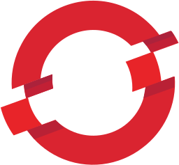

eBPF for Everyone
ingraind is an security monitoring agent born for the cloud.
Spot misbehaving processes and containers to react immediately.
Built on eBPF and Rust for easy extensibility.
Get started-
Secure & Safe
Both eBPF and Rust are designed for safety and security. Add ingraind to your systems without fear of instability or compromise.
-
Customize as you Wish
ingraind provides accessible documentation for most eBPF functionality so you can extend and improve the data you rely on.
-
Designed for Real Life
Time is your most expensive asset, so we made deployment easy and frictionless. Kubernetes, GCP, AWS, Arm64, bring your own buzzword.
Built for
Integrated with
-

-

-
-
-
-
Meet the team
ingraind
and
RedBPF
are being developed by a community of individuals and companies from across the globe. The project is used in industries like security, gaming, or blockchain. ingraind was originally developed by
Red Sift
.
To learn more about contributing , please consult our documentation.
ingraind is a proud member of the CNCF.